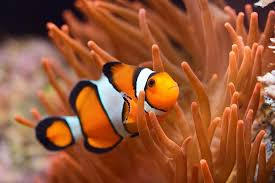

Turtles are the animals most often found laying eggs on several coasts in Indonesia since ancient times

This clown fish can be recognized by its orange color. This fish grows up to 8 cm and is one of the most popular fish in the world.
Lionfish / volitans is a venomous fish belonging to the family scorpaenidae, which translated means sea version of scorpion fish